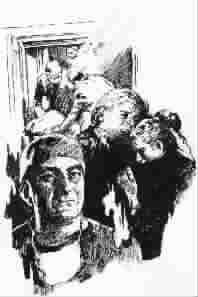

站在生者与死者之间
●〔美〕托马斯·林奇
○张宗子 译
我的童年平淡无奇。母亲视我们如珍宝，父亲却总是忧心忡忡。在他看来，危险无处不在，灾难随时可能发生。它们就像念着我们名字的幽灵，徘徊在周围，等待在父母疏忽的一瞬间把我们席卷而去。甚至在最单纯无害的事情中，父亲也能看到危险。橄榄球赛使他想到撞裂的脾脏；每家后院的游泳池，使他想到淹死人；擦伤使他想到破伤风；蹦床使他想到胫骨折断；而每一个小疹子或虫子的叮咬，都使他想到致命的水痘或高烧。
因为父亲是一名殡仪员。
作为殡仪员，他习惯了意外和看似不可能的伤害。他学会了担惊受怕。
母亲把大事托付给上帝。她最喜欢对我们说，“原先计划”只生一个孩子，结果生了9个，多出来的都是上帝的礼物——当然也没什么好奇怪的，原因她自己明白——因此还得靠上帝来保佑。我敢肯定，她坚信，上帝的守护天使就翱翔在我们身边，保护我们免受伤害。
可是父亲却从那些婴儿、幼童和少男少女的遗体上，看到了上帝依照自然法则存在并依从自然法则的明证，不管这法则是何等残酷。孩子们因为重力，因为物理学和生物学的原理，因为自然的选择而夭亡。车祸、麻疹、插在烤面包机里的刀、家用毒剂、装弹的枪、绑架犯、连环杀手、阑尾炎、蜂蛰、卡喉的硬糖、未得到治疗的哮喘病，凡此种种，他目睹了太多的事例，全是上帝无意干预自然秩序的例证。除了飓风、陨石和其他自然灾害，最残酷的一项，就是儿童遭受的那些异乎寻常的劫难。
正因为这样，每当我和兄弟姐妹们请求去某个地方玩这玩那时，父亲总是脱口而出：“不行！”他刚刚埋葬的一个孩子，正是因此才惨遭不幸的。
那些男孩子有的死于打棒球没戴头盔，有的死于钓鱼没穿救生衣，或是吃了陌生人给的糖果。随着我们兄弟姐妹一天天长大，导致那些孩子死伤的行为也越来越成人化。他们不再死于意外或自然的灾变，不知不觉间，他们越来越多地死于人际关系。儿童被雷击的故事逐渐让位于失恋自杀，让位于少年人因开飞车、酗酒和吸毒而丧生，以及数不清的只是因为不小心而导致的死亡。一句话，他们不该在“错误的时间置身于错误的地点”。
然而他的恐惧不是装出来的，亦非毫无道理。就算是郊区那些备受宠爱、备受呵护的孩子，也不能担保不出事。社区里少不了疯狗、能传染疟疾的蚊子和冒充邮差与教师的歹徒。日常经验告诉他，最糟糕的事随时可能发生。在父亲看来，就连蝴蝶也难逃嫌疑。
所以，当母亲做完祈祷，像个上帝的孩子一样安然入睡时，父亲却一直警觉着、提防着，电话和收音机都放在伸手可及的地方，准备随时接听殡仪馆半夜打来的电话和监听打给警察局和消防队的求救电话。在我童年的记忆里，没有一天早晨他不是守候在床前等我们醒来，没有一个夜晚不是等到我们回家才回房就寝。这一习惯一直保持到我19岁。
每天早晨，他都能从收音机里听到昨夜发生的不幸事件的消息；每天晚上，他都要带回葬礼上的悲伤故事。我们的早餐和晚餐，话题中总少不了新寡的未亡人，伤心的、承受不了痛苦而垮掉的、丧失了亲人的可怜人，包括因痛失孩子而终生痛苦的父母们。每当此时，母亲眨眨眼，针对他的担心说出一番道理，最终我们仍能获准去打棒球、露营，独自去钓鱼、开车、约会、滑雪、开支票账户以及冒其他人生成长中不可避免的风险。母亲的信心就这样抹平了由父亲的恐惧屹立在我们面前的高山。
母亲的口头禅是：“听天由命，顺其自然吧。”
母亲这样的态度，绝非漠不关心。生死事大，她一概托付给上天，从而得以把精力用在日常生活中，保证我们健康成长。她关心的是“性格”“正直”“我们对社会的贡献”和“我们灵魂的救赎”。她相信，上帝把她孩子的灵魂交由她亲自负责，她的天堂靠的是我们的良好品行。
对于父亲来说，我们做什么，我们成为什么人，取决于人生的脆弱本性。我们生来似乎就是可怜的、忧心忡忡的。除此之外，皆属非分。
我们按照父母养育我们的方式来做父母。我开始体会到这一点，是在1974年。那年2月我有了第一个孩子；6月，我们买下米尔福德的殡仪馆。在这个生死都受人注意的小镇上，我是个刚当上爸爸的人，又是一个新殡仪员。我注意到的事情之一，是我们受托料理的死婴和死胎的数量。20年前，附近没有医院，镇子周围没有一家诊所，产前护理根本谈不上。那些日子，我们每年除了安排上百场成年人的葬礼，还要安葬十多个夭折的婴儿，有的是生下来就死了，有的没活多久就因为种种疾病而送命。
我常和这些不幸的父母坐在一起，他们精神恍惚，试图弄明白眼前发生的变故。一向担当保护角色的父亲，感到茫然无助；母亲们内心深处则浸透了痛苦，随时会崩溃。他们脸上的表情像是说，什么都没有意义了，什么都没有了。
当我们安葬老人时，我们埋葬的是已知的过去。我们曾把它想象得比实际更好，但所有的过去都是一样的，其中的一部分我们曾栖身其中。记忆是压倒一切的主题，是最终的慰藉。
但埋葬孩子就是埋葬未来，难以控制的、不为人知的未来，充满希望和可能性，以及被我们的梦想所拔高的美好前程。悲伤无边无际，无始无终。坐落在墓园一角和栅栏边的那些小小的坟茔，永远容纳不下心头的伤痛。死去的婴儿没有给我们留下回忆，他们留下的是梦想。
我忘不了初为人父和殡仪员的最初几年，生育孩子和掩埋孩子对我来说都是新鲜事。半夜里我常会醒来，悄悄跨进儿女们睡觉的房间，俯身床前，听他们均匀的呼吸。这就够了。我并不奢望他们成为宇航员、总统、医生或律师，我只要他们好好活着。像父亲一样，我学会了恐惧。
我从孩子们的每一个动作中，都看到可能致命的后果。我们住在殡仪馆隔壁的一幢旧房子里，孩子们在侧院玩橄榄球，在停车场溜旱冰，然后是滑板、骑自行车，最后是开车。在4个孩子分别是10岁、9岁、6岁和4岁那年，他们的母亲和我离了婚。她搬走了，孩子留给我。面对4个伤心的孩子，我觉得自己完全失败了。长久以来，婚姻已成为痛苦，离婚虽然使我得到解脱，我也为之高兴，但我同时意识到，做一个单亲家长，意味着在诸般不便之外，全靠你的一双眼睛盯着孩子们，不再有第二双；你的一对耳朵得时时注意倾听；只有你一个人的身躯为他们挡开灾祸；只剩下你一颗心为他们操心。冲突少了，担心多了。房屋本身隐藏着危险：水池下放着消毒剂，每件电器都可导致触电，地下室缺氧，厨房垃圾能传染疾病。
每当孩子不仔细看两边的路就跨进车如流水的大街，我不免急火攻心。打耳光、破口大骂、摔门、踢狗、握紧拳头想揍人，老天，全是因为爱！爱给人伤害，因为有爱才会有哀痛。那是我们向生活中我们无力控制的一切宣战。这样做，适合装英雄，适合演戏，却不是抚养孩子的正道。
如我所知，信仰才是治疗恐惧的唯一良药。信仰就是你知道有人在此负责，检查身份证，守护边界。信仰正如我母亲所言：听天由命，顺其自然，好像是一步跨进不由我们支配的未知领域，但我们在那里始终是受欢迎的。
有这么一件事。不久前我刚送走一个女孩，她叫斯蒂芬妮，得名于石匠的保护神、第一个殉教者圣斯蒂芬。她是被扔下的一块墓地的石碑砸死的，当时她正睡在汽车的后座上。时当半夜，他们全家驾车沿着州际公路前往佐治亚州。他们是傍晚时分从密歇根州出发的，要到佐治亚州一个农场看圣母显灵。据说每月的13号，圣母都会现身对信徒讲话。当他们在夜色中穿过肯塔基州中部时，一群无所事事的男孩子正在墓地里撬石碑玩。他们最后选中了一块，天晓得准备拿去干什么。走过高速公路上方的天桥时，他们累了，不想再要那块石头了。桥下，南行车流的灯光闪烁如一条长龙，他们没有恶意，纯粹是恶作剧，把那块石头越过栏杆扔了下去。不偏不倚，就在此刻，斯蒂芬妮父亲驾驶的车疾驰而来，被石头砸个正着。石头以每秒32英尺的速度向下坠落，汽车以70英里的速度往南开。石头击碎挡风玻璃，擦过斯蒂芬妮父亲的肩膀，惊醒坐在旁边的母亲，从两个座位中间穿过，击中了正在后座熟睡的斯蒂芬妮的胸口。在后座的还有她的弟弟和另外两个妹妹，而斯蒂芬妮刚刚才和弟弟交换了位子。斯蒂芬妮当时未死，她的胸骨被击碎，心脏受了重伤。路过的一位卡车司机停下，通过无线电替他们求救。可是，这是在周五凌晨两点钟，在肯塔基州一条前不着村后不着店的高速公路上，救援需要时间。全家人在路边祈祷，斯蒂芬妮抽搐着、呻吟着，两小时后死在医院。斯蒂芬妮的母亲在后座找到那块致命的石头，交给当局。石上有“福斯特地界”的字样，后来查明，那是“复活节墓地”福斯特区的界石。
事情有时宛如多重选择题。
第一，这是上帝的旨意。黑色星期五，上帝一早醒来，说：“我要斯蒂芬妮！”对这件离奇的意外，除此还能有什么解释呢？仔细回想事情的经过，太像上帝的杰作。如果是另一种结果，我们只能称为奇迹。
第二，这不是上帝的旨意。上帝知道此事，或迟或早他一定会听说，但他没有干预，因为他知道，我们是何等依从于自然法则——关于重力和运动以及静止物体的定律——所以他无意改变那些偶然或刻意得到的结果，他沉痛地向我们通告不幸的发生。我们能理解他的立场。
第三，这是魔鬼干的。如果我们相信善的存在，邪恶亦然。有时候，邪恶会抢在前面下手。
第四，与上面所说的全不相干。倒霉事发生了，生活就是如此。忘掉它，继续活下去。
或许还有第五种答案：上面的理由都对。生命的神秘，就像数十年来的祈祷，那荣耀而又悲哀的大神秘。
每一个答案都无损于我继承来的信念：父亲的恐惧和母亲的信仰。如果它是上帝的旨意，我会说，主啊，你真丢脸。如果不是，主啊，你真丢脸。没什么两样。我会对着全能的主挥舞拳头，问他：“那个13号的凌晨，你究竟在哪里？”他自然有借口，每天都在变。
那没有浮出水面的答案，那信仰并不要求的答案，将属于斯蒂芬妮的父母，以及多年来我所熟知的成百上千人。
(张滨摘自新星出版社《殡葬人手记》一书，孙愚图)